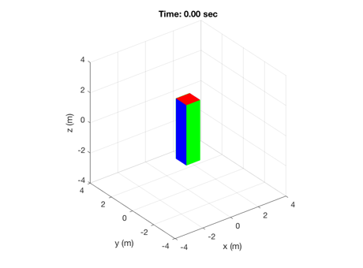
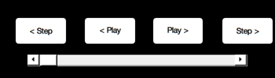
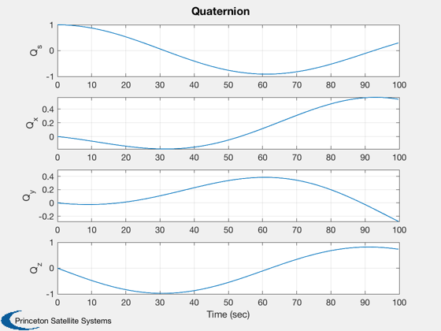
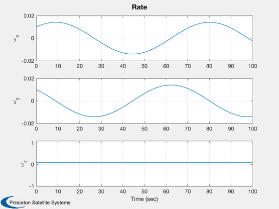
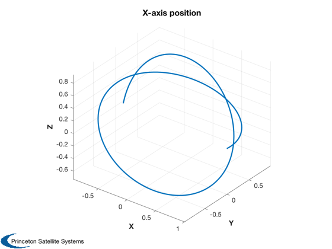
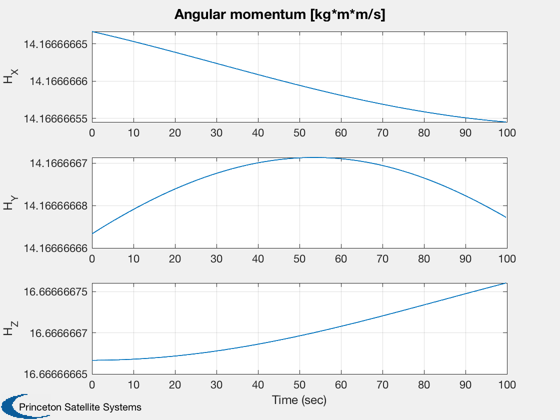
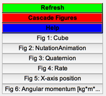

Demonstrates rigid body rotation.
You enter a time step, end time, dimensions of the cube and mass.
You can also enter a step body fixed disturbance.
The displayed cube is based on the entered dimensions.
During the simulation you can rotate the cube with the mouse.
Uses the SCT functions:
Inertias
AnimateCube
RK4 (Runge-Kutta 4th order numerical integration)
FRB (rigid body rhs)
TimeLabl (generates reasonable labels in sec, min, etc.)
Plot2D
Plot3D
------------------------------------------------------------------------
See also AnimateCube, Inertias, QTForm, Figui, Plot2D, Plot3D,
TimeLabl, Mag, RK4
------------------------------------------------------------------------
Contents
The integration time step (seconds)
dT = 0.2;
tEnd = 100;
Spacecraft Properties (select a set of xYZ dimensions below)
xYZ = [1 1 4];
mass = 1000;
Initial conditions [quaternion;rate]
q0 = [1;0;0;0];
w0 = [0.01;0.01;0.1];
x = [q0;w0];
Step disturbances
tDist = [0.0;0.0;0.0];
Number of sim steps
nSim = tEnd/dT;
t = dT:dT:tEnd;
Spacecraft Inertia
inr = Inertias( mass, xYZ, 'box', 1 );
invInr = inv(inr);
Plotting array
xPlot = zeros(7,nSim);
Initialize the animation
tag = AnimateCube( 'initialize', xYZ );

Run the simulation
for k = 1:nSim
xPlot(:,k) = x;
x = RK4('FRB',x,dT,0,inr,invInr,tDist);
end
playback = @(x) AnimateCube( 'update', tag, [xPlot(1:4,fix(x/dT)+1);t(fix(x/dT)+1)] );
PlaybackControls( 0, tEnd, 0, playback, dT, 'NutationAnimation' )

2D Plots
[t, tL] = TimeLabl( (0:(nSim-1))*dT );
Plot2D(t,xPlot( 1: 4,:),tL,['Q_s';'Q_x';'Q_y';'Q_z'],'Quaternion')
Plot2D(t,xPlot( 5: 7,:),tL,['\omega_x';'\omega_y';'\omega_z'],'Rate')
 
3D Plot
u = [1;0;0];
r = QTForm( xPlot(1:4,:), u );
Plot3D( r, 'X', 'Y', 'Z', 'X-axis position' )

Analyze Angular Momentum
H = zeros(3,nSim);
q = xPlot(1:4,:);
w = xPlot(5:7,:);
for i=1:nSim
H(:,i) = QTForm(q(:,i),inr*w(:,i));
end
Plot2D( t, H, tL, ['H_X';'H_Y';'H_Z'], 'Angular momentum [kg*m*m/s]');
fprintf('\nAngular Momentum\n================\n');
fprintf('\n\tMean: \t%f\n\tVariance:\t%g\n\n',mean(Mag(H)),var(Mag(H)))
Angular Momentum
================
Mean: 26.060826
Variance: 2.50924e-19

Create an index to the plots
Figui;
